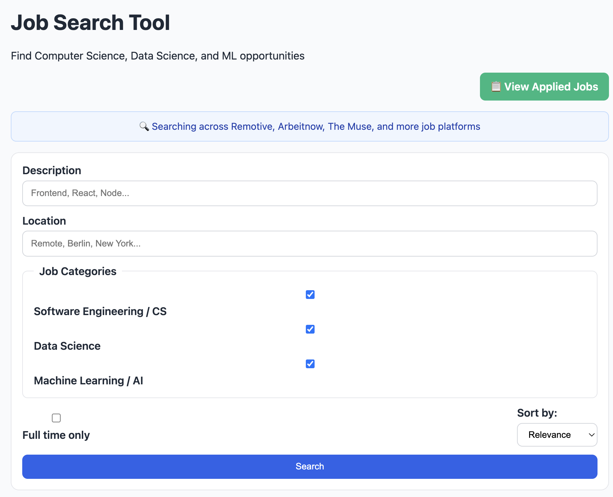
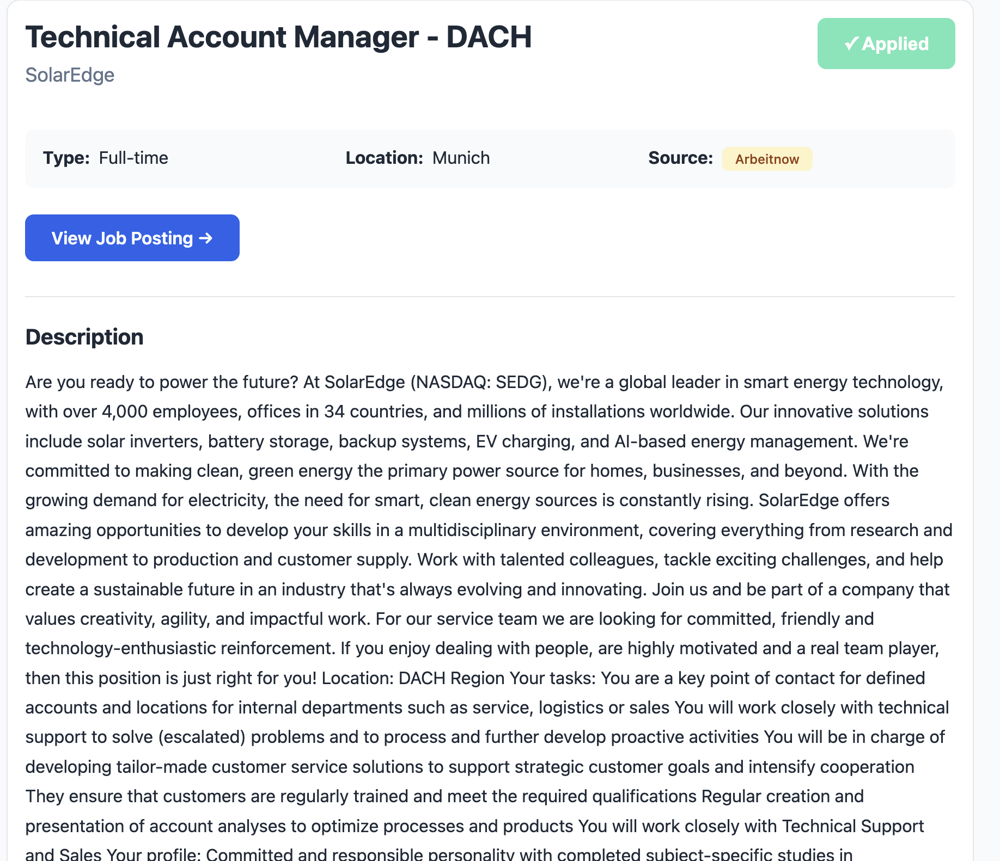
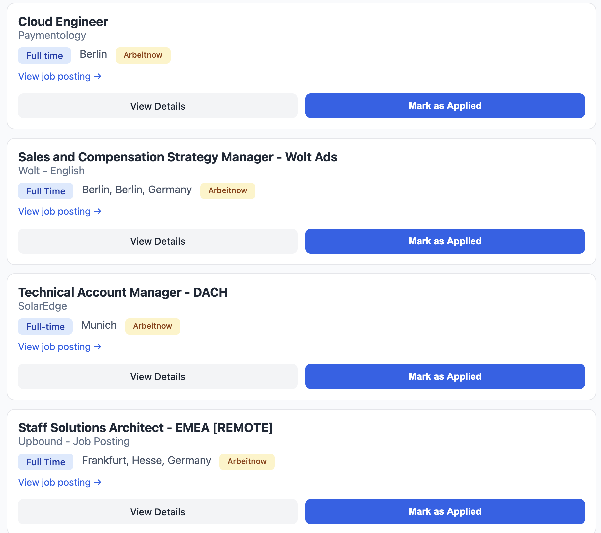
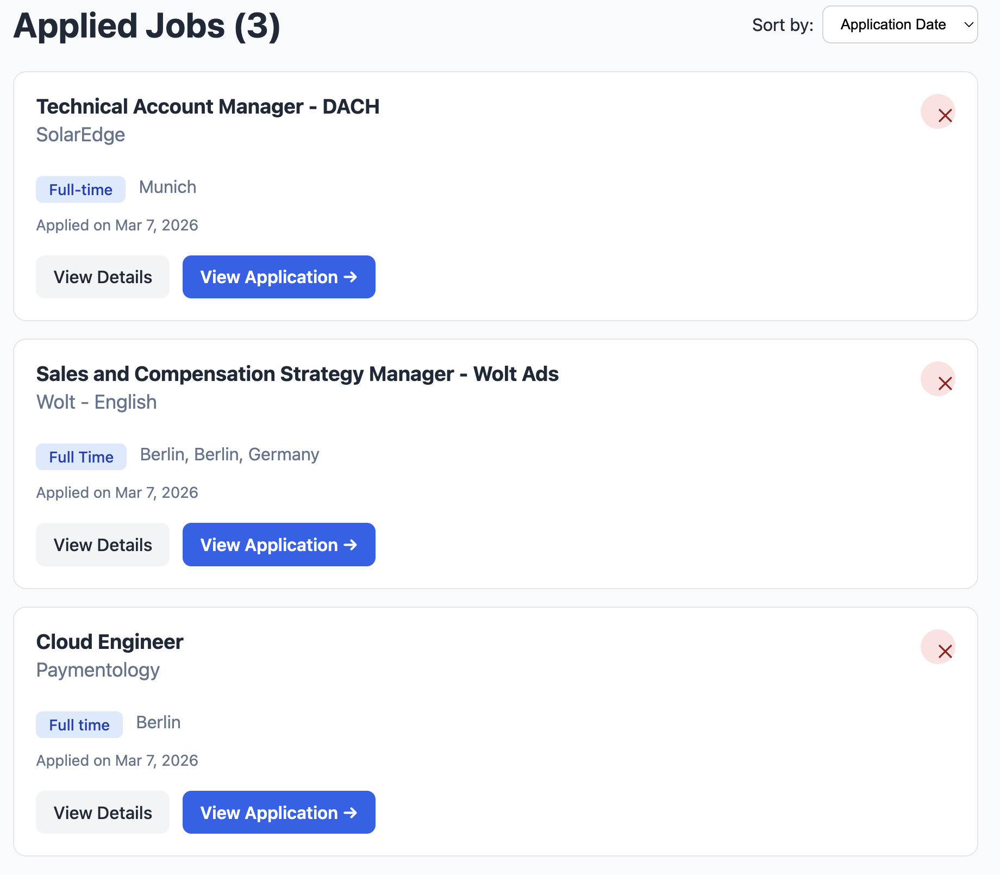

Overview
Job Search Tool is a focused job finder for Computer Science, Data Science, and Machine Learning roles. It aggregates opportunities from multiple platforms and keeps your applied jobs in one place.

Main dashboard with search inputs and quick actions
What makes it useful: multi-source search, category filtering, human-readable job descriptions, and built-in applied-job tracking.
Search Jobs
- Enter keywords in Description (for example: React, Data Engineer, NLP).
- Optionally add a Location (or use Remote).
- Click Search to load matching jobs.
- Use Sort by to prioritize results.

Results list with salary/source badges, quick apply tracking, and details links
Use Filters & Sorting
Category Filters
- Software Engineering / CS
- Data Science
- Machine Learning / AI
Other Controls
- Full-time only toggle
- Sort: Relevance, Date Posted, Company, Job Title

Category checkbox filtering and sorting controls
Tip: Start with all categories selected, then narrow down by one category + location for faster matching.
Read Job Details
Click View Details from any job card to open full details.
- Role metadata: type, location, salary, source
- Cleaned description in readable format
- Direct link to original posting
- One-click Mark as Applied

Detailed role view with readable description and apply action
Track Applied Jobs
Use View Applied Jobs from the search dashboard to open your tracker.
- See all jobs marked as applied
- Sort by date, company, or title
- Remove entries when needed

Applied jobs manager with sorting and remove actions
| Action | Where | Result |
|---|---|---|
| Mark as Applied | Job Card / Job Detail | Saves job to applied list |
| View Applied Jobs | Search Header | Opens applied tracker page |
| Remove Job | Applied Jobs page | Deletes from tracker |
Best Practices
- Use targeted keywords (example: “senior backend engineer python”).
- Combine category + location to reduce noise.
- Mark jobs right after applying so your tracker stays accurate.
- Use sorting by date for freshest opportunities.
Data Note: Applied jobs are stored locally in your browser for privacy and fast access.